Scranton, Pennsylvania
Historical Scranton
We tracked down old postcards and photos of Scranton and lined them up with the exact same spot today. Slide between them and watch a hundred years disappear. Pick a corner below to get started.
-
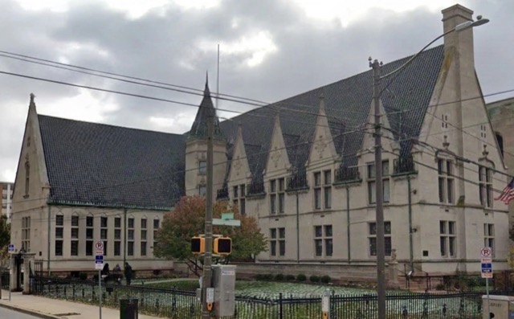
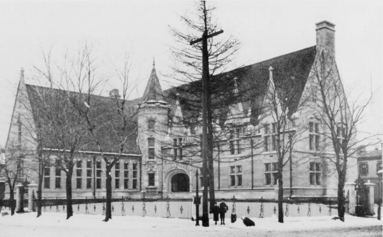
Albright Library
Vine Street at North Washington Avenue
Modelled on the Cluny in Paris. A century on, what has changed is mostly the signage.
c. 1900today
-
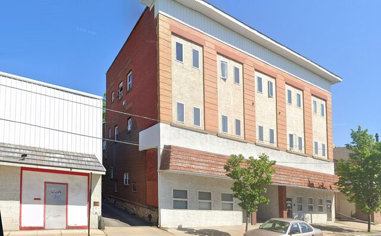
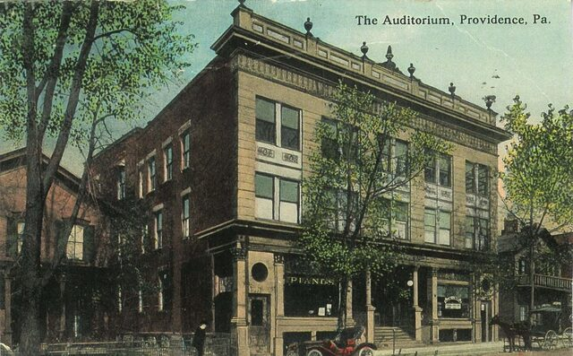
The Auditorium
North Main Avenue at Oak Street
The shape survived the century. The surface did not.
c. 1910today
-
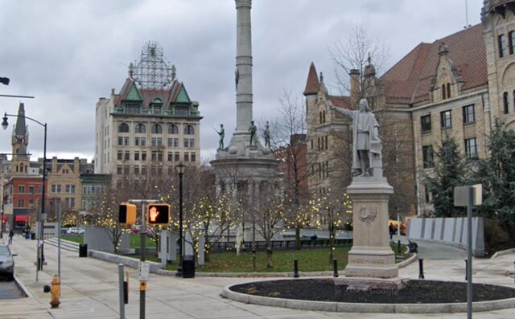
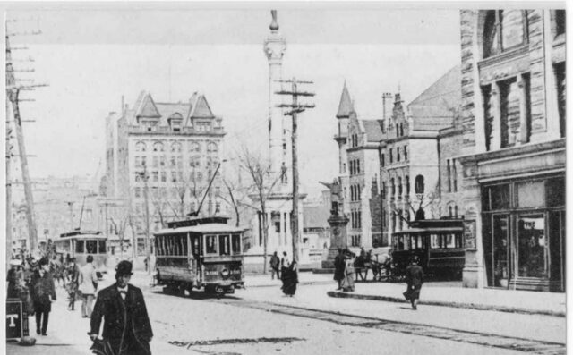
Courthouse Square
Spruce Street at North Washington Avenue
The memorial column was new when this was taken. It is still the only thing in the frame that has not moved.
c. 1905today
-
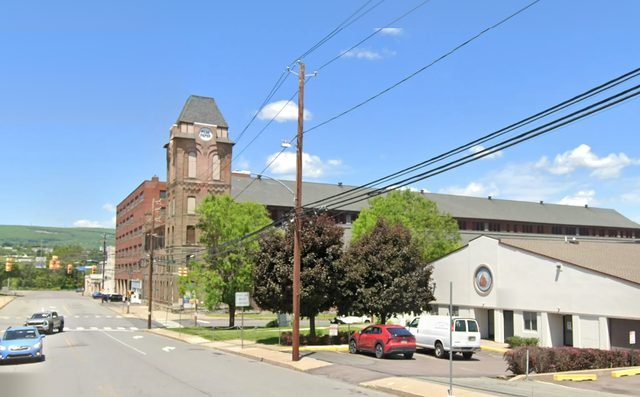
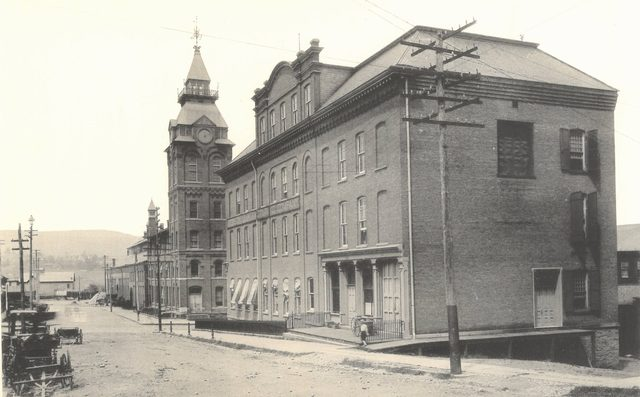
Dickson Works
Penn Avenue at Vine Street
The works turned out a hundred locomotives a year. The tower still stands, shorn of its spire, over a paper warehouse.
c. 1895today
-
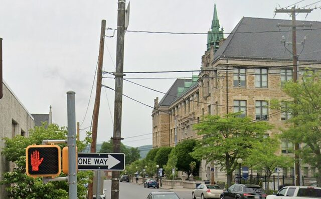
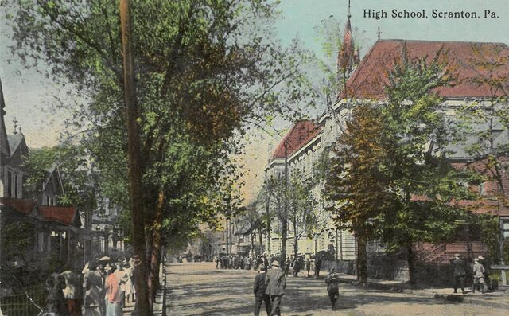
High School
Vine Street at Adams Avenue
The tower and the roofline hold their positions; the elms over the sidewalk do not.
1910today
-
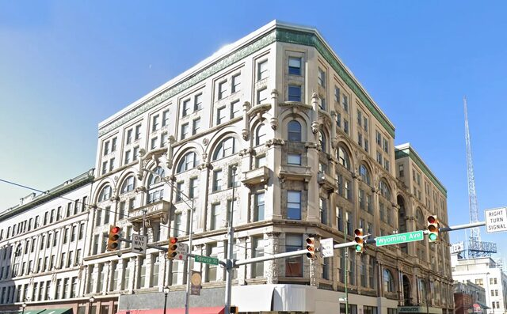
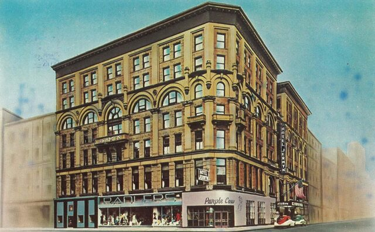
Hotel Jermyn
Spruce Street at Wyoming Avenue
Radler's and the Purple Cow are lettered across the ground floor. Both were gone by 1965; the building wasn't.
1950stoday
-
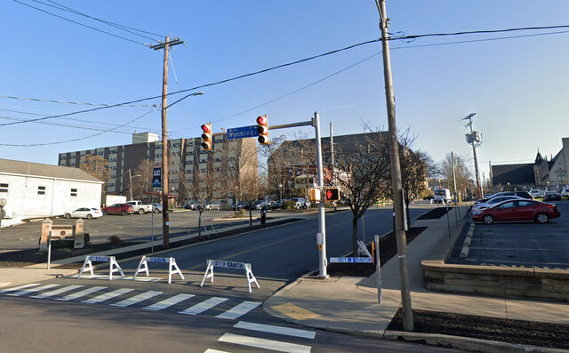
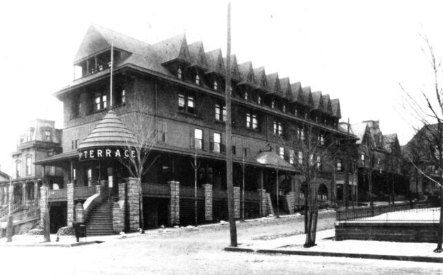
Hotel Terrace
Wyoming Avenue at Vine Street
Burned in 1986 and cleared. The stone wall across the street is the only thing left to line up.
c. 1900today
-
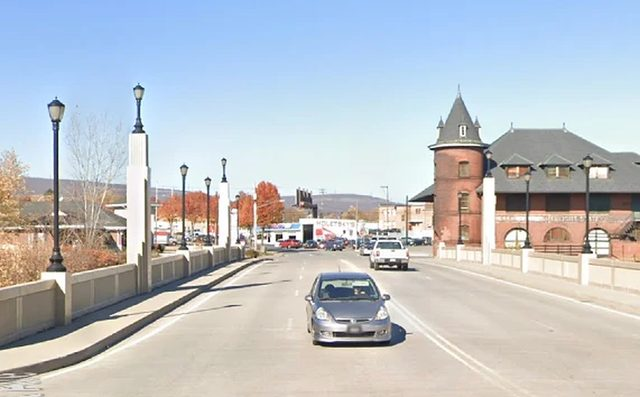
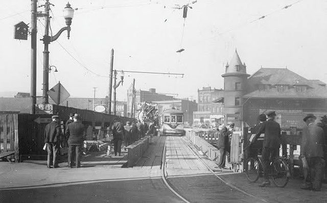
Lackawanna Avenue Bridge
Lackawanna Avenue at the river crossing
The Central Railroad of New Jersey station still stands at the far end. The bridge under it has been rebuilt, and the trolleys went with it.
c. 1910today
-
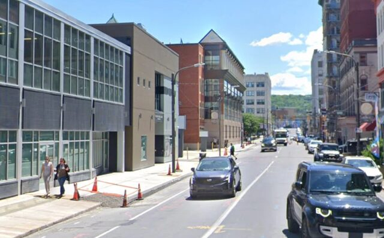
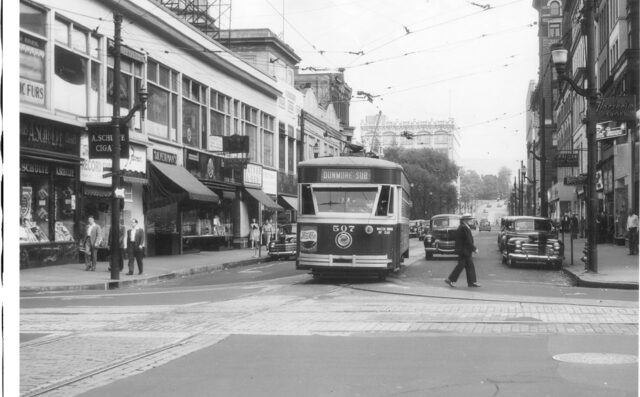
The Last Streetcar
400 block of Spruce Street
Car 507 rolled through here on the last day Scranton's streetcars ran. The tracks and wire are gone; the brick building down toward the corner isn't.
1950today
-
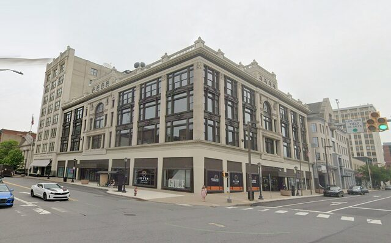
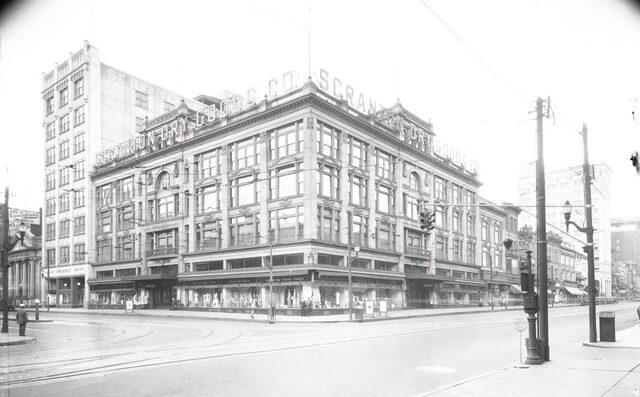
Scranton Dry Goods
Lackawanna Avenue at Wyoming Avenue
The signs called it Scranton's Busiest Corner. The building is still standing; the signs are not.
1920stoday
-
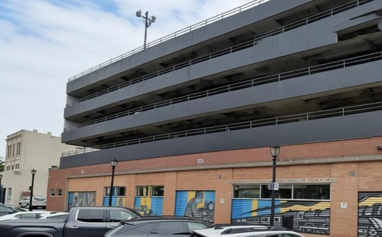
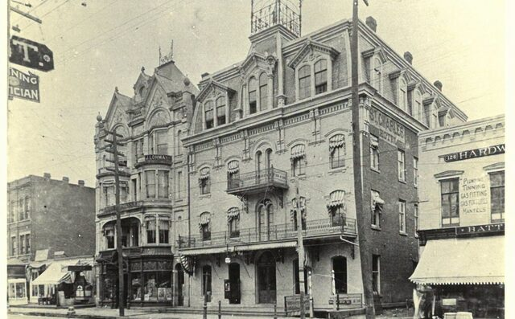
St. Charles Hotel
128 Penn Avenue
One of the city's first hotels and, for two decades, the unofficial seat of local Democratic politics. Razed in 1913, its replacement razed again in 1956; a parking garage holds the corner now.
c. 1900today
-
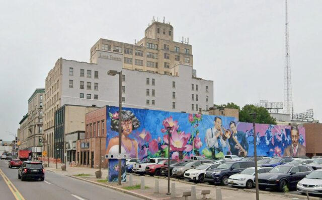
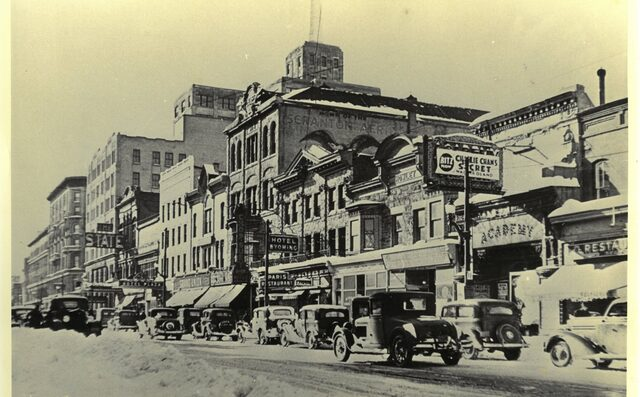
Theater Row
200 block of Wyoming Avenue
Three theaters and five restaurants lined this block on a snowy night in 1936. All of it is gone now, cleared for a parking lot and a mural.
1936today
-
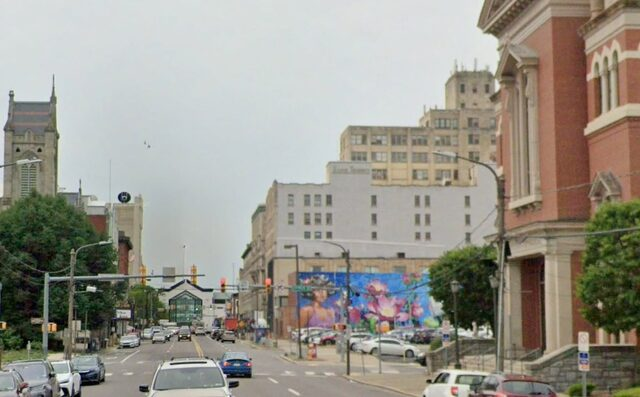
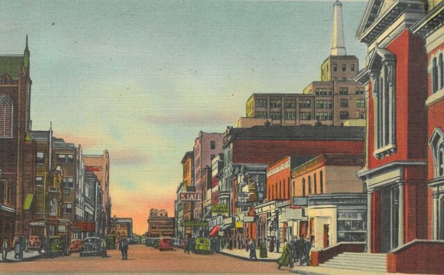
Wyoming Avenue
Wyoming Avenue, looking south
Two churches bookend the block and both still stand. Most of what filled the gap is now a parking lot.
Mid-centurytoday
Historical images are period postcards and photographs; each page credits its source. Modern imagery is Google Street View, © Google. Notes on making these are in the playbook.